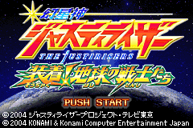

Genseishin Justirisers - Souchaku! Hoshi no Senshi-tachi (Japan)
Flash 512K
Cartridge Identity
- Game Code
BGJJ(FamilyBGJ)- Header Title
JUSTIRISER- Maker / Revision
A4/ rev0- ROM Size
- 16.0 MiB (16,777,216 B)
- Save Media
Flash 512K- SHA-256
0396a184b516433a9f1f5e51d67fbb1e69c01b0d9fd7728adb3655bb674ad7ee- Engine / SDK Group
comm-039(5 families)
Screenshots

ROM Assets, Compression & Audio
- BIOS Compression
- LZ77 (
0x10): 0 streams · RLE (0x30): 0 streams - ROM Pointer Tables
- 43 tables (0 pointing to validated compressed streams)
- SDK Backup Tags
FLASH512_V131
Hardware MMIO Subsystems
ppu_display0x800aa28,0x8010e24,0x801576csave_bus_sram_flash0x803c70c,0x803c960